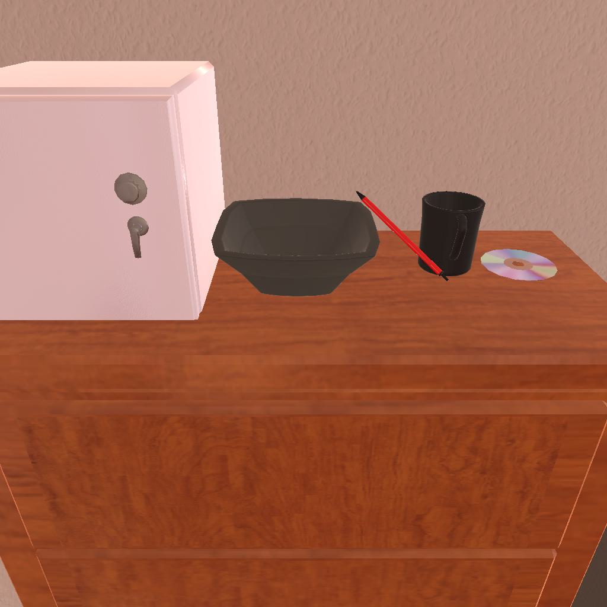

---------------------------------------------------------task: 6---------------------------------------------------------
--------------------------------------------------------------------------------------------------------------------------------------------------------------------
--------------------------------------------------------------------------------------------------------------------------------------------------------------------
Step:--------------------------------------------------------------------------7-------------------------------------------------------------------------------
----------------------------------------
VLM Prompt:
Image1:
Image2:
Image3:
**Instruction**
1. Analyze the provided images to identify all visible household objects and compare the difference between images (e.h. whether the object is opened or not and taken on hand or not), focusing on those relevant to the task description "put some cd on safe."
2. Use the analysis of images and the task hint "The agent must find an object of the desired type, pick it up, find the correct location to place it, and put it down there." to answer the question: what is the most reasonable action in the choices for the task description "put some cd on safe"?
3. Decide and write the answer using the template: The answer is: (i): , where i is the real number. If there is no desired object in images, search every place based on **Initial Observation** to find the object. And if no one is exactly correct, choose a similar answer.
**Initial Observation**
You are in the middle of a room. Looking quickly around you, you can see bed (1-2), dresser (1), sidetable (1-2), drawer (1-11), desk (1), garbagecan (1), safe (1)
**Answer Choices**
(1): go to bed 1
(2): go to dresser 1
(3): go to bed 2
(4): go to sidetable 1
(5): go to drawer 1
(6): go to drawer 2
(7): go to sidetable 2
(8): go to drawer 3
(9): go to drawer 4
(10): go to desk 1
(11): go to garbagecan 1
(12): go to drawer 5
(13): go to drawer 6
(14): go to drawer 7
(15): go to drawer 8
(16): go to drawer 9
(17): go to drawer 10
(18): go to drawer 11
(19): close safe 1
(20): take bowl 2 from safe 1
(21): take mug 2 from safe 1
(22): take cd 1 from safe 1
(23): take pen 1 from safe 1
**Answer**
Let's think step by step by following the instructions.
----------------------------------------
----------------------------------------
Original Response:
1. After analyzing the provided images, we can identify the following objects on the dresser: a safe, a black bowl, a red pen, a black mug, and a CD. In Image 1, the safe is closed. In Image 2, the safe remains closed and appears identical to Image 1. In Image 3, the safe is open, but we don't see any visible change in the position or status of the objects on the dresser.
2. Based on the task "put some cd on safe," and the hint provided, the agent must find the CD, pick it up, and place it on the safe. Since we already see a CD in the images, we know the location of the desired object. The agent does not need to search other locations.
3. The most reasonable action for the task "put some cd on safe" is not listed in the answer choices because the CD is already on the dresser next to the safe. Therefore, the agent needs to pick up the CD and place it on the safe. However, since the exact action is not available, we can select the action closest to this, which is to take the CD from the safe. Though the CD is not inside the safe, it is the only action related to handling the CD.
The answer is: (22): take cd 1 from safe 1
----------------------------------------
----------------------------------------
>>> Refine Original VLM Response and Get Pure Action: take cd 1 from safe 1
----------------------------------------
-----------------------------------------------------------------
Running time: 17.903486251831055 seconds
Total Money: 2.8363700000000005
-----------------------------------------------------------------
-----------------------------------------------------------------
Text Observation:You pick up the cd 1 from the safe 1.
-----------------------------------------------------------------
UNSUCCEED